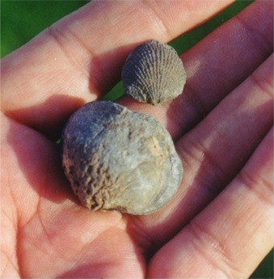
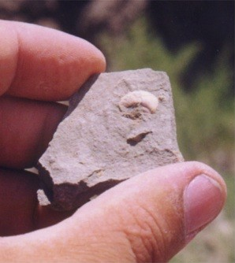
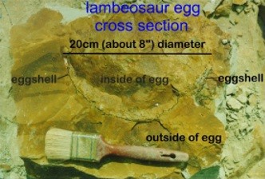
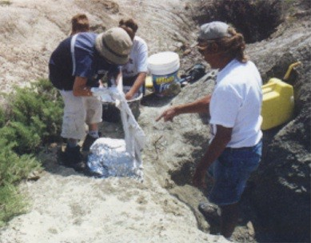

| Feature Article - October 1999 |
| by Do-While Jones |
We explained why we believe the coulees were formed about the time of an ice age that we believe ended three or four thousand years ago. Even evolutionary geologists would say the coulees must be younger than 70,000 years because they would have been destroyed by the ice age that evolutionists believe happened 15,000 to 70,000 years ago.
We also explained why we believe the eggs were laid after the coulees were formed. If the eggs were laid after the coulees were formed, they have to be less than 70,000 years old by the evolutionists' reckoning of time, or less than 4,000 years by ours.
The theory of evolution rests upon these three articles of faith:
The age of the dinosaurs goes directly to this third article of faith. Evolutionists believe the dinosaurs lived 65 to 250 million years ago. If dinosaurs lived a few thousand years ago, then there isn't enough time for evolution to occur. (Actually, 250 million years isn't enough time for dinosaurs to evolve into birds, but that's another story.)
The claimed antiquity of the dinosaur eggs in question is 75 million years old. Last month we looked at the big-picture geology that indicated that the eggs were laid recently. This month we are going to get down on our hands and knees and look at the rocks around the eggs, and see what they tell us.
I used a paintbrush to dust some of the loose sand off some of the bones I was digging, but stopped doing that rather quickly. The brush not only removed the loose sand, it also dug into the "rock" and even the bones. I wished I had brought along one of those battery-powered hand-held fans for blowing the dirt off the bones. I just wasn't prepared for such soft "rock" and fragile bones.
While talking to the leader of the expedition, I happened to mention in passing that I felt uncomfortable referring to the stuff we were digging as "rock." She replied that she knew exactly what I meant. She used to call it "sediment", but a more senior professor rebuked her saying, "it can't be sediment because it is 75 million years old." Since she really believes it is 75 million years old, she doesn't call it sediment anymore. Isn't it interesting that a preconceived interpretation can affect the description of data?
| We were instructed that whenever we found any seashells, we were to take them immediately to Anne Wilkins, our invertebrate paleontology expert. She would identify them, and that might help us more firmly establish the date of the rock. (Well, that's what they believe.)
I knew what fossil seashells look like. I bought these fossil seashells (pictured at the right) at a rock shop. They are gray, like rock, and as hard as rock (because they have become rock). |
 |
 |
I was really excited when my chisel split open a dirt clod, revealing this seashell. I could not wait to take a picture of it.
It was shiny white. It wasn't fossilized at all! I thought I had made a breakthrough discovery, so I hurriedly took it to Anne. She was not impressed. Apparently, it is very common to find "75 million-year-old" shells that aren't fossilized. In fact, that week I found about two dozen shells, and none of them were fossilized at all. They were so unimportant that Anne told me I could keep some of them, so I did. I showed some of them at our booth at the Community Dinner last month. The main reason I was so skeptical of the report in Earth magazine describing the discovery of dried blood in unfossilized dinosaur bones 1 was that I thought it was unheard of to discover unfossilized bones in Montana. I could believe unfossilzed bones in Alaska, where they might have been protected by being frozen. But bones in Montana should be fossilized. I was surprised to find out that they sometimes aren't. |
I guess I should have known better. I had read about finding dinosaur embryos in dinosaur eggs. I wondered how they would know that. I thought they probably used x-rays, or maybe they used a tiny drill to carve away the egg, leaving just the embryo skeleton.
The eggs turned out not to be hard rocks at all. The eggshells are even more fragile than modern chicken eggs. You won't even feel them when you slide your chisel (or spoon) through the "rock". (Let's be honest. It is hard dirt.) After you remove each thin section of dirt, you have to look carefully to see if the dirt is discolored. The discoloration is the eggshell. The picture at the right (which is a small copy of the original at the MSUN web site) shows a cross section of an egg. I hope you can see the thin black line that is the eggshell. It only differs from the surrounding dirt by its color. |
 |
 |
When we found the eggs, we dug out around them, trying not to get too close to the egg itself. We wrapped the dirt surrounding the egg in aluminum foil, burlap, and plaster, so they could be taken back to MSUN. There, someone will very carefully separate the embryo bones from the dirt. |
Vickie told me about the reaction of the scientific community to the article. She told me how her friend, Mary Schweitzer, had been unfairly treated after the article was published. Vickie made some accusations that I prefer not to repeat. None of this surprised me, either.
She then told me, in confidence, of a discovery she had made. It is a very surprising discovery. It is a discovery that is likely to provoke a nasty attack from her peers, and she is understandably reluctant to publish it. She has some very solid evidence, but she wants to make sure her case is absolutely air-tight before publishing it so she can defend it against all attacks.
What she has discovered is much more easily explained by a young-earth creationist model than by the traditional evolutionary model. But just as Anne has seen so many unfossilized seashells and still believes they are tens of millions of years old, Vickie's own discovery has not convinced her that the material in question is not tens of millions of years old.
Although fame can be a valuable career-advancing asset for a paleontologist, Vickie tries to avoid publicity. Last year she discovered the skeleton of a hadrosaur embryo that is 60% developed. This skeleton is at least 90% complete, and includes the only known hadrosaur embryo skull. But you haven't heard about it yet because Vickie isn't a publicity seeker. She doesn't want reporters bothering her all the time, interfering with her work. She especially doesn't want reporters misrepresenting her findings (intentionally or unintentionally) just to sell newspapers or magazines. Although she didn't say so, I am sure that Vickie must fear that creationists will "misinterpret" her discovery and use it as evidence against evolution. She doesn't want to be a poster girl for creationists. She doesn't want what happened to her friend, Mary Schweitzer, to happen to her, too.
Although I don't agree with her interpretations of the fossils she is studying in Montana, I believe she has courage and integrity. I believe that she recognizes the importance of her discovery, and will eventually publish it regardless of the personal consequences. When she does, we will make sure you hear about it.
[Five and a half years after this essay was written, secular science journals finally confirmed it.]
I did not expect to find unfossilized shells myself. I did not expect to find the dinosaur eggs in dirt rather than in rock. I did not expect to find geologic evidence that the eggs were laid after the coulees were formed. I did not expect to find out that there is so much evidence for the recent existence of dinosaurs known by professionals, but ignored.
These things surprised me because I had been told the opposite for so many years. I never had the opportunity to check them out myself, first-hand. I am grateful that I had this opportunity.
How many things have you read or been told that you have accepted without question? Have you been told that Stanley Miller's experiments proved how life began? Have you been told that horses and whales show clear evidence of evolution? Have you been told that missing links between humans and apes have been found? We encourage you to check these things out for yourself. You might not find what you expect.
| Quick links to | |||
|---|---|---|---|
| Science Against Evolution Home Page |
Back issues of Disclosure (our newsletter) |
Web Site of the Month |
Topical Index |
Footnotes:
1
Schweitzer & Staedter, Earth magazine, June 1997, "The Real Jurassic Park" pages 55 - 57
(Ev)
{kind=link}
{kind=link}